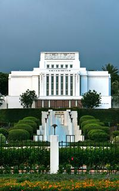

Temple Album
☰
Home
Old
New
Large
Small
Temple Gallery
Salt Lake Temple
Los Angeles Temple
Mexico City Temple
Rome Italy Temple
Provo City Center Temple

Laie Hawaii Temple
Paris France Temple
Tokyo Japan Temple
Tegucigalpa Honduras Temple